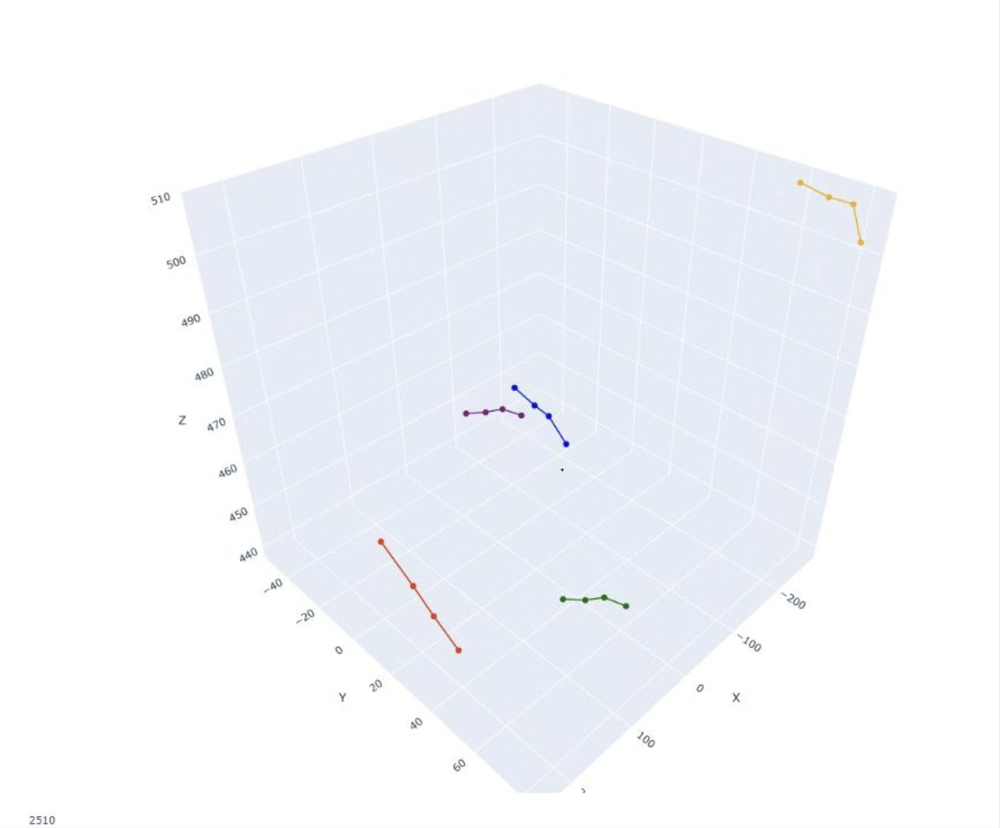
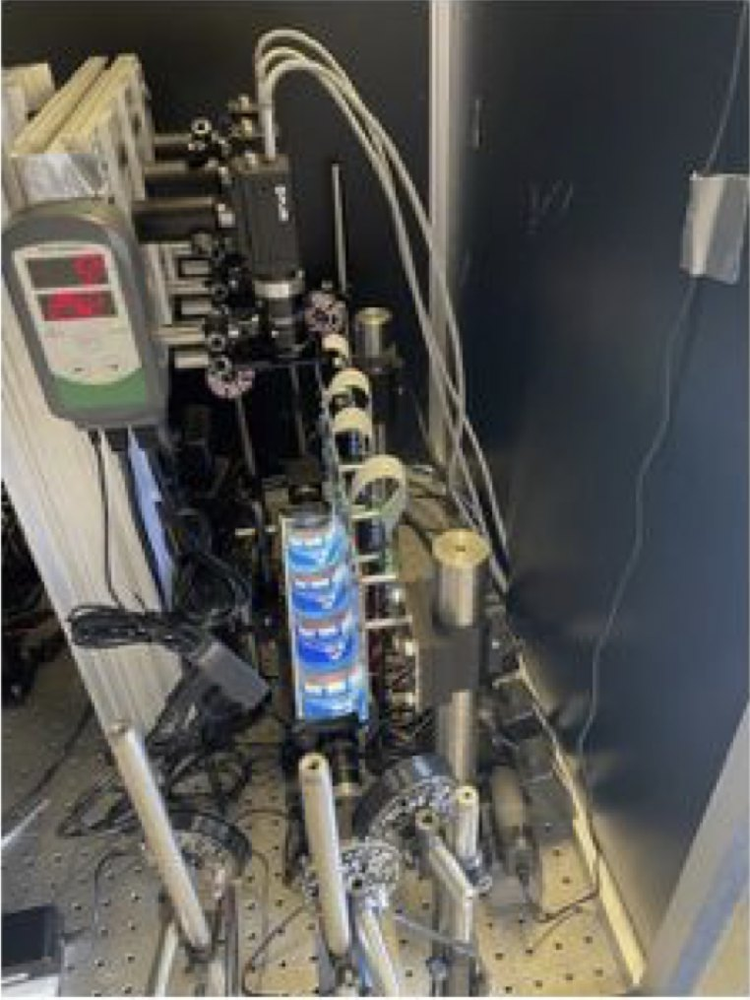
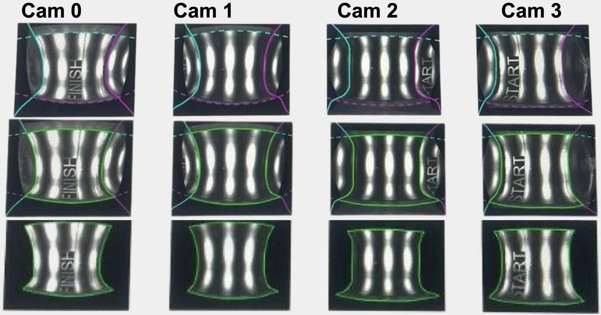
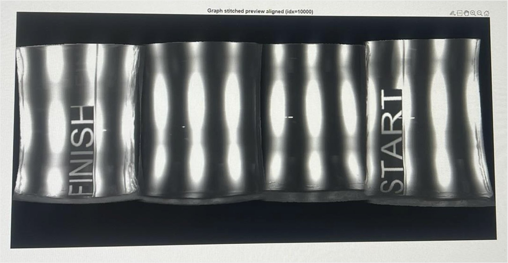

Optomotor Response in 3D
Harvard University · Engert Lab
How do fish of different ages and species follow a moving visual pattern when they can swim in three dimensions? I built the camera and tracking pipeline to measure it.

- 4Cameras stitched
- 2Views triangulated
- 2Species
- 3DPose per fish
The question
The optomotor response (OMR) is a reflex where fish swim to follow moving stripes. It is usually studied in shallow dishes. This project monitors medaka and zebrafish across age groups in a deep arena, so we can see what they do with the extra dimension.
- 01Compare responses across age groups
- 02Identify the preferred response depth
- 03Test preference for lower optic-flow regions
- 04Measure behaviour under conflicting visual stimuli
- 05Compare endurance and exhaustion between species

01 / The Dragstrip
A long, deep arena with stripes projected underneath.
Cameras record from the top and the side, triggered together through WaveForms so every frame lines up. Recordings are saved as HDF5 and converted to AVI with a MATLAB script for labelling.
02 / Finding the fish
First, separate the fish from the stripes.
Each recording is background-subtracted, so only the fish remain as bright points against black. This first pass shows where they are before the pose models take over.
03 / Project Panorama
Four cameras, one seamless view.
- UndistortCalibrate each camera and remove lens distortion from every frame.
- MaskHand-draw left, right, top and bottom borders per camera to keep only the valid region. Cached so they are drawn once.
- WarpA Coons-patch warp maps each trapezoid-shaped view into a clean rectangular strip of equal width.
- AlignNormalised cross-correlation on overlapping regions estimates the vertical and horizontal seam offsets, which nudge the warp maps into line.
- BlendStrips are feather-blended across the seams and streamed to a stitched video in memory-safe batches.


04 / 3D pose estimation
From two flat views to one 3D fish.
- Label & trainTop-down SLEAP models for the top and side cameras, anchored on the tail with ±180° rotation so fish can be found facing any direction.
- TrackFlow tracking with Hungarian matching and OKS similarity keeps identities stable when fish overlap.
- CalibrateA 10×7 ChArUco board, photographed in both views at once, calibrates the camera pair.
- Triangulatesleap-anipose combines matched 2D tracks into 3D points, which I visualise and check in Python.
05 / The result
Every fish, tracked in three dimensions.
Triangulated poses for both species, frame by frame: length, depth and height inside the arena.
06 / Where it stands
The pipeline works. The tracks need one more pass.
I reached triangulation in the final week of the project. Every stage of the pipeline, from synchronised recording and calibration to pose estimation and 3D reconstruction, runs end to end.
What it still needs is a round of track correction. A few identities swap or drift when fish overlap, which shows up as stretched skeletons in the 3D projections. With more time, I would go back through those tracks frame by frame, fix the mismatches, and re-run the triangulation for clean, publishable trajectories.
Built with
- MATLAB
- Python
- SLEAP
- sleap-anipose
- HDF5
- ffmpeg
- Plotly